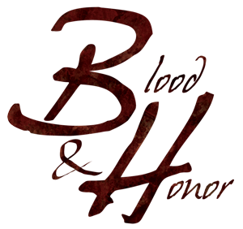

Link da playlist no YouTube

Live do RPG Blood & Honor.
Mestre: O'Neill
Jogadores: Danielle, SirLockee e SirClaudio
| Descrição | Download |
|---|---|
| Ficha do Clã Takeshin |
|
| Ficha do SirLockee, personagem Hayato |
|
| Ficha da Danielle, personagem Harumi |
|
| Ficha do SirCláudio, personagem Shinshou |
|
Músicas (copyleft) utilizadas na Live
| Descrição | Download |
|---|---|
| Música Principal (abertura da live) |
|
| Música da aparição do Ronim |
|
| Música de batalha/combate |
|
| Música da cena de flash back |
|
| Música de intriga |
|
| Música de Roleplay |
|